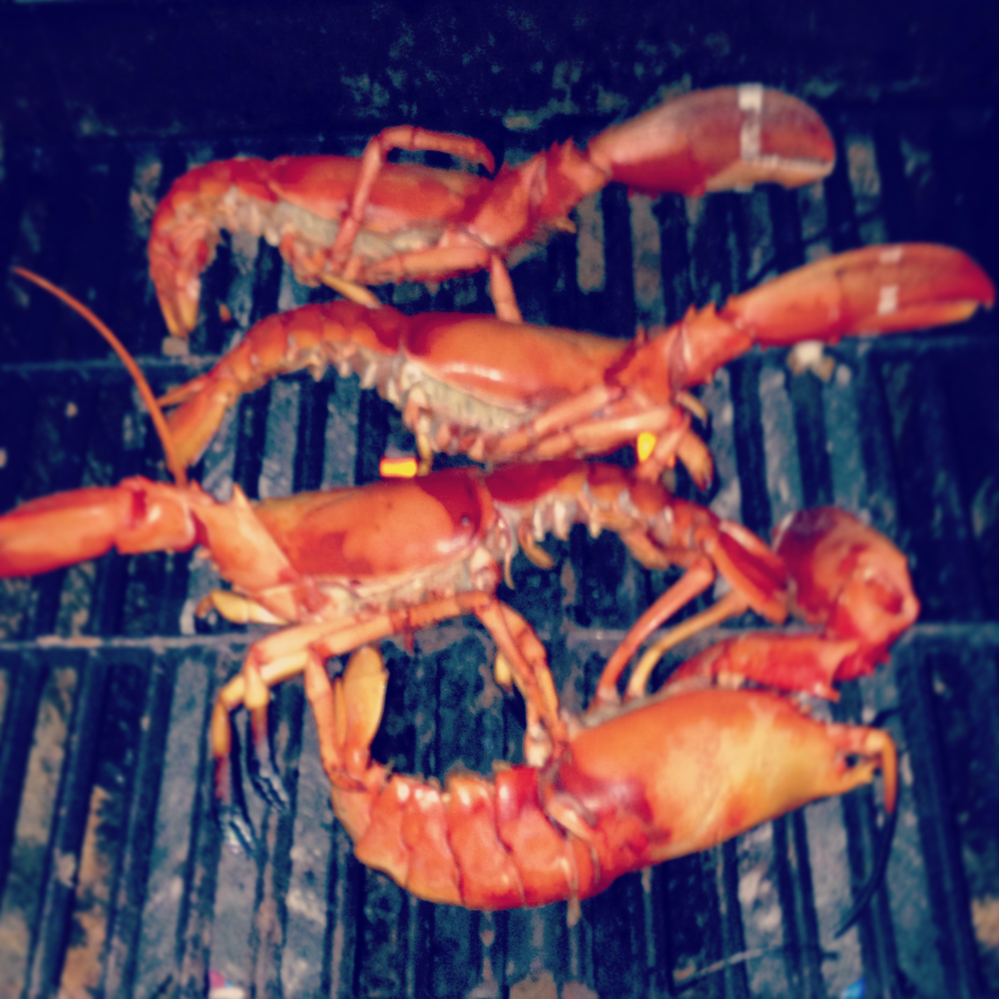

Food
Grilled Lobster

Ingredients
- 2 whole live lobsters (1-1/2 to 2 lb. each)
- Olive oil, as needed
- Sea salt
- 1 Lemon
Preparation
- Kill the lobsters by cutting them in half.
- Set the grill to medium-high heat. Brush some olive oil and place them bottom side down on the grill.
- Grill until the shells are bright red and the juices turn white, 8 to 10 minutes for a 1-1/2-lb. lobster and 12 to 14 minutes for a 2-lb. lobster.
- Remove the lobsters. Season with sea salt and a squeeze of lemon on each.
Braised Squid and Artichoke

Ingredients
- 1 lemon
- 4 large artichokes
- 1 tablespoon extra virgin olive oil
- 1 tablespoon minced garlic
- 3-4 anchovy fillets, chopped
- 2 pounds cleaned squid, the bodies cut into rings
- Freshly ground black pepper
- Minced parsley for garnish
Preparation
- Cut the lemon in half, squeeze the juice into a bowl of water, and add the lemon halves. Cut the trimmed artichokes into 4 pieces each, and as they are done, add them to the lemon water.
- Place a large skillet or broad saucepan over medium heat and add 2 tablespoons of the oil; a minute later, add the garlic and anchovies. Cook, stirring occasionally, until the anchovies break up and the garlic begins to color, 3 to 5 minutes. Add the squid and the artichokes, stir, cover and turn the heat to medium.
- Uncover and stir the mixture every 5 minutes or so. When the squid and artichokes begin to become tender, after 15 or 20 minutes, uncover and cook until most of the liquid has evaporated and the squid and artichokes are tender, about 10 to 15 minutes longer. Season with pepper. It's highly unlikely this dish will need added salt, especially if you use anchovies, but taste and see. Stir in the remaining olive oil, garnish with the parsley and serve.